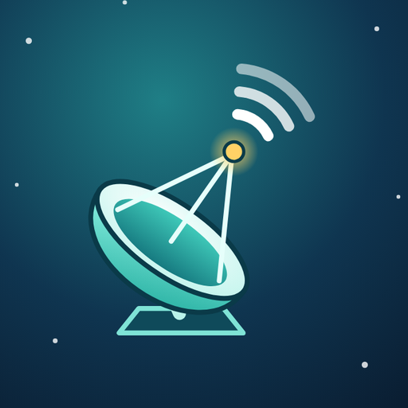

Uydu Bul
Uydu Bul

Uydu Bul
Çanak antenini uydu için doğru noktaya getir: konum, yön ve eğimi telefonun ölçer.
Point your dish at the right satellite: your phone measures location, direction and tilt.
Neler yapar?
What it does
Konum
Location
GPS ile ya da şehir seçerek konumunu bulur. Konum yalnız telefonunda kalır.
Finds your position by GPS or by picking a city. It never leaves your phone.
Pusula
Compass
Seçtiğin uydunun azimutunu gösterir; ibre yeşile dönünce doğru yöndesin. Kalibrasyon ve ince ayar dahil.
Shows the satellite's azimuth; when the ring turns green you are aligned. Calibration and fine-tuning included.
Eğim
Tilt
Çanağın eğimini ve LNB dönüşünü hesaplar; offset çanak için doğru açıyı gösterir.
Calculates dish tilt and LNB skew, with the right angle for offset dishes.
Kamera
Camera
Gökyüzünde uydunun yolunu gösterir; önünde ağaç ya da bina var mı görürsün.
Overlays the satellite's path on the sky so you can spot trees or buildings in the way.
7 dil, 8 tema
7 languages, 8 themes
Türkçe, İngilizce, Almanca, Fransızca, Rusça, Azerice, Arapça. Koyu ve açık renk temaları.
Turkish, English, German, French, Russian, Azerbaijani, Arabic. Dark and light colour themes.
Gizlilik önce
Privacy first
İnternet izni yok: uygulama hiçbir veriyi dışarı gönderemez. Reklam, takip, hesap yok.
No internet permission: the app cannot send any data out. No ads, no tracking, no account.
Nasıl kullanılır?
How it works
- Konumunu belirle (GPS ya da şehir).
- Listeden uyduyu seç (ör. Türksat 42°D).
- LNB'yi gösterilen açıya çevir.
- Telefonu çanağın ortasına yasla, eğimi ayarla.
- Pusulayla yönü bul.
- Alıcıdaki sinyal çubuğuna bakarak ince ayar yap.
- Set your location (GPS or city).
- Pick the satellite from the list (e.g. Türksat 42°E).
- Rotate the LNB to the angle shown.
- Rest the phone on the dish centre and set the tilt.
- Find the direction with the compass.
- Fine-tune using your receiver's signal bar.
Önemli: Telefon uydu sinyalini ölçemez. Uygulama sizi doğru yöne ve açıya getirir; son ince ayar için alıcınızın sinyal seviyesi ve kalite çubuğunu kullanın. Uydu konumları nominal yörünge slotlarıdır.
Important: a phone cannot measure satellite signal. The app gets you to the right direction and angle; use your receiver's signal level and quality bar for the final fine-tuning. Satellite positions are nominal orbital slots.